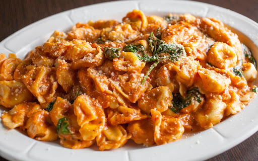

Blacken Chicken for the soul

This pasta dish will become a mainstay in your arsenal. Creamy cheese sauce
with juicy pieces poltury in every bite.
This flavorful dish, with it's blend of spices,
will leave you wanting more!
Ingredients
- Chicken Breast
- Olive oil
- Vodka sauce
- Tortellini
- Half and half (optional)
- Extra sharp shredded cheddar cheese
- Salsa con queso (I recommend Taco Bell Salsa Con Queso)
- Tajin
- Chili
- Garlic powder
- Onion Powder
- Pepper
- Smoked Paprika
- Salt
- Cayenne Powder
Steps for chicken preparation.
- Combine all seasonings in a bowl.
- Using a small amount of olive oil coat the chick breast,
then apply the seasonings.
- Pre-heat the oven to 400 degrees.
- Get a skillet and coat the bottom with enough olive
oil to blacken the chicken. From there turn the heat on
high until the oil is hot enought to blacken the chicken.
Put chicken in skillet and let it sear for about 4 minutes.
Once all the chicken has been blackened place on a pan and
insert into the oven for 20 minutes. Make sure to check on
the chicken using a themometer to make sure it is cooked
all the way through.
Steps for Tortellini and sauce preparation
- Insert Vodak sauce in a sauce pan and set the heat to a low
simmer. From here add your seasonings for your desired taste.
I added a generous amounts of queso and extra sharp shredded
cheddar cheese along with tajin seasonings and some cayenne
powder and smoked paprika for a little kick. Remember to stir
the sauce occausionally.
- In a large pan add your desired amount of water and a bit of
salt. Bring the salted water to a boil and add your tortellini.
Bring water back to a boil and cook pasta to desired tenderness.
Drain pasta using strainer and return pasta to the large pan.
- Combine the vodka sauce and the tortellini along with your chicken
and enjoy!